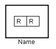

Edit: Opens an edit dialog for the list.

List Contents: The current values in the list.
Initial Values: The initial values for the list separated by semi-colons.

A real list is a list that contains real values. Each time an application is started the list receives the specified initial values.
Note: Edit is chosen automatically instead of showing a context menu with only one choice.
Edit: Opens an edit dialog for the list.
List Contents: The current values in the list.
Initial Values: The initial values for the list separated by semi-colons.